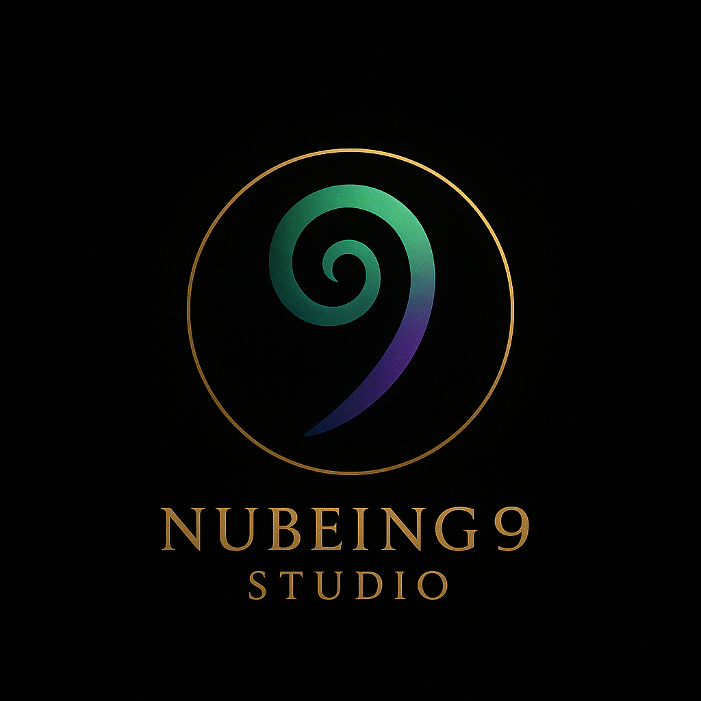

Turn a scattered thought into signal, direction, and a coherent next action.
Signal Capture helps founders, creators, and operators turn unclear thoughts into signal, direction, and a usable next action.

Signal Capture helps founders, creators, and operators turn unclear thoughts into signal, direction, and a usable next action.
© Nubeing 9 Studios™